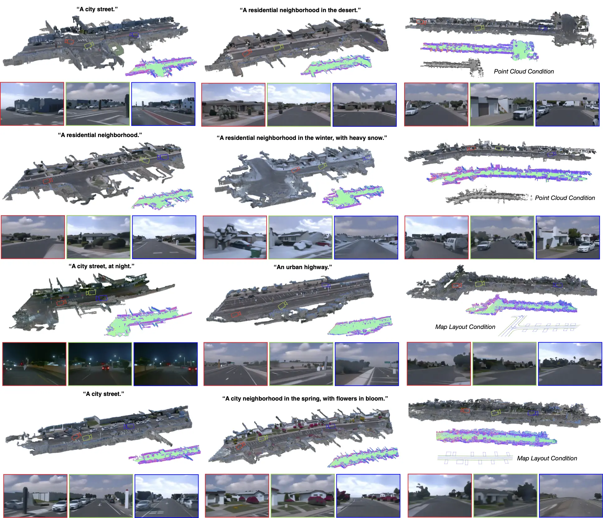

Summary
Large-scale scene data is essential for training and testing in robot learning. Neural reconstruction methods have promised the capability of reconstructing large physically-grounded outdoor scenes from captured sensor data. However, these methods have baked-in static environments and only allow for limited scene control -- they are functionally constrained in scene and trajectory diversity by the captures from which they are reconstructed. In contrast, generating driving data with recent image or video diffusion models offers control, however, at the cost of geometry grounding and causality. We aim to bridge this gap and present a method that directly generates large-scale 3D driving scenes with accurate geometry, allowing for causal novel view synthesis with object permanence and explicit 3D geometry estimation.
Geometry-Grounded Large-Scale 3D Scene Generation
We generate a large-scale scene as a combination of a coarse geometric layout, an environment map, and a set of Gaussians for texture details. The geometric layout is either generated, conditioned on a map, or predicted from point-cloud data and guides the overall scene structure. We can further control the setting with a scene prompt, for example, specifying time-of-day, season, and weather. Through Geometry-Grounded Distillation Sampling (GGDS), we then further optimize the Gaussian-based scene representation by leveraging 2D priors from the conditional latent diffusion model through consistent diffusion sampling (inversion) and image-space optimization -- together with a set of geometry-grounding regularizers -- and generate a causal large-scale scene representation.

Example Scenes
We visualize 3D scenes generated via our method, alongside the corresponding map of surface normals and selection of novel viewpoints at street level for each of them. In the first two columns, we provide samples of scenes with diversity in time-of-day, season, location, and scene type. In the third column, we provide examples of generated scenes with a point cloud condition and map layout condition. We confirm the method generates diverse, explicit, and causal 3D scenes.

Baseline Comparisons
Our approach generates an accurate and 3D-consistent scene representation, enabling high-quality novel view synthesis and the generation of unlimited off-trajectory viewpoints. Existing methods, such as Vista combined with Gaussian Splatting, GEN3C and MagicDrive3D, which generate driving videos, struggle with generating consistent and 3D-plausible scenes for generating novel driving trajectories.
BibTeX
@article{ost2025lsd3d,
title = {LSD-3D: Large-Scale 3D Driving Scene Generation with Geometry Grounding},
author = {Ost, Julian and Ramazzina, Andrea and Joshi, Amogh and
Bömer, Maximilian and Bijelic, Mario and Heide, Felix},
booktitle = {The Fortieth AAAI Conference on Artificial Intelligence},
year = {2026},
}